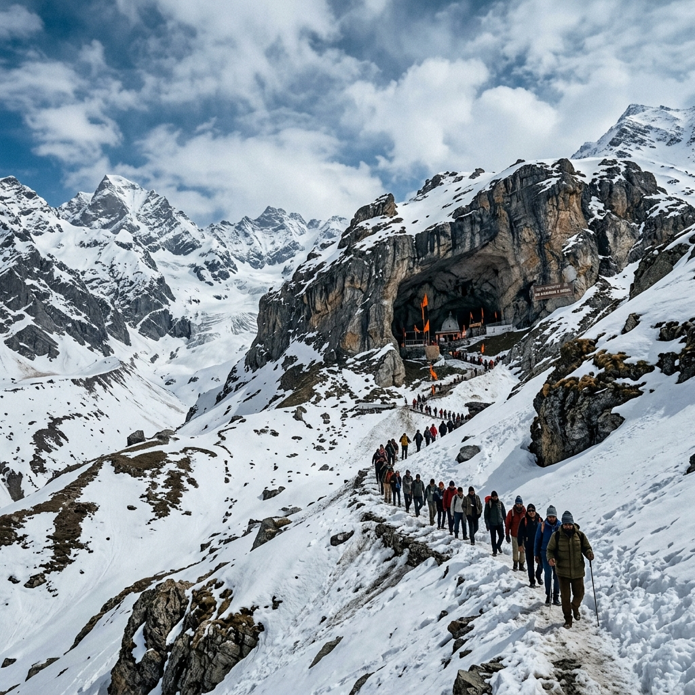

Amarnath Yatra Package
5 Days / 4 Nights · Route planning · transport support
Pilgrimage planning, not generic tourism
This package is organised around the real needs of Amarnath travellers: timing, route choice, stay coordination, and reducing confusion during a demanding journey.
It can be adapted for helicopter-based pilgrims, trekking-based pilgrims, or families wanting a smoother support system around the yatra. Instead of selling it like a sightseeing holiday, this page frames it as a route that needs discipline and practical coordination.
The agency remains useful here because plans often shift around weather, registrations, movement windows, and physical comfort.
Day 1: Arrive in Srinagar
Airport pickup, check-in, rest, and final yatra route briefing based on current conditions and chosen mode.
Day 2: Move toward base sector
Transfer toward the operational base sector depending on registration, helicopter slot, or trek plan.
Day 3: Yatra day
Undertake the pilgrimage according to the selected route. The support plan stays focused on timing, return movement, and stay readiness.
Day 4: Recovery and return movement
Return toward Srinagar or continue the required route back from the base area, with proper rest and meal support.
Day 5: Departure
Airport transfer or optional extension into Kashmir sightseeing after the pilgrimage.
Included
- Stay coordination
- Transport planning and transfers
- Support for route logistics
- Basic itinerary guidance
- On-ground contact support
Not Included
- Registration fees unless specified
- Helicopter tickets unless selected
- Medical clearances
- Meals not listed
- Personal pilgrimage purchases
Important
Pricing varies by route type, stay category, and helicopter availability. Final planning should be confirmed before travel dates are locked.